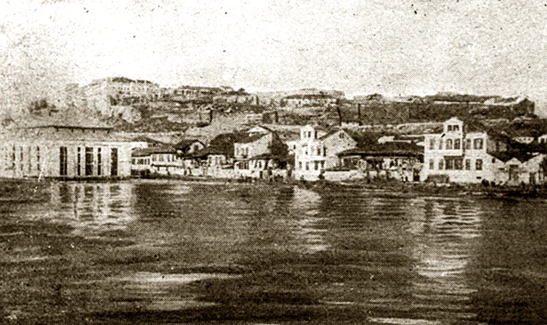

Sel 1962 - 1
- Senaryo ve yönetmen
- Trajče Popov ve Branko Gapo
- Kameraman
- Branko Mihajlovski ve Dušan Gajić
- Yıl
- 1963
- Süre
- 00:16

1895'te Yahudi mahallesinin sel baskını. Taş Köprü'den Türk tiyatrosuna doğru fotoğraflandı. Yukarıda arka planda Üsküp Kalesi.

1895 seli.

1895 seli.

1897 seli.

1916 seli.

Mayıs 1916 seli. Küçük ahşap köprünün yanında Vardar'a bakış. Sağda ilk tiyatro gösterilerinin yapıldığı "Boges" kahvehanesi. Yukarıda arka planda Üsküp Kalesi.

Mayıs 1916 seli. Katolik kilisesinin önündeki ana cadde.

Mayıs 1916 seli, "13 Kasım" rıhtımında, Taş Köprü'nün hemen yanında, Vardar'ın sol kıyısında. Arka planda Burmalı Camii.

Sel - 1962. Meydana kadar ana cadde.

 Su kemeri4 kartpostal
Su kemeri4 kartpostal Kale30 kartpostal
Kale30 kartpostal Köprüler60 kartpostal
Köprüler60 kartpostal Rıhtım58 kartpostal
Rıhtım58 kartpostal Meydan46 kartpostal
Meydan46 kartpostal Binalar66 kartpostal
Binalar66 kartpostal Hristiyan kiliseleri19 kartpostal
Hristiyan kiliseleri19 kartpostal İslami yapılar33 kartpostal
İslami yapılar33 kartpostal Subaylar Evi29 kartpostal
Subaylar Evi29 kartpostal Tiyatro28 kartpostal
Tiyatro28 kartpostal Tren garı13 kartpostal
Tren garı13 kartpostal Okullar36 kartpostal
Okullar36 kartpostal Parklar12 kartpostal
Parklar12 kartpostal Pazarlar18 kartpostal
Pazarlar18 kartpostal Sokaklar38 kartpostal
Sokaklar38 kartpostal Panorama I60 kartpostal
Panorama I60 kartpostal Panorama II30 kartpostal
Panorama II30 kartpostal Kolajlar55 kartpostal
Kolajlar55 kartpostal Seller9 kartpostal
Seller9 kartpostal Deprem27 kartpostal
Deprem27 kartpostal Üsküp 200026 kartpostal
Üsküp 200026 kartpostal